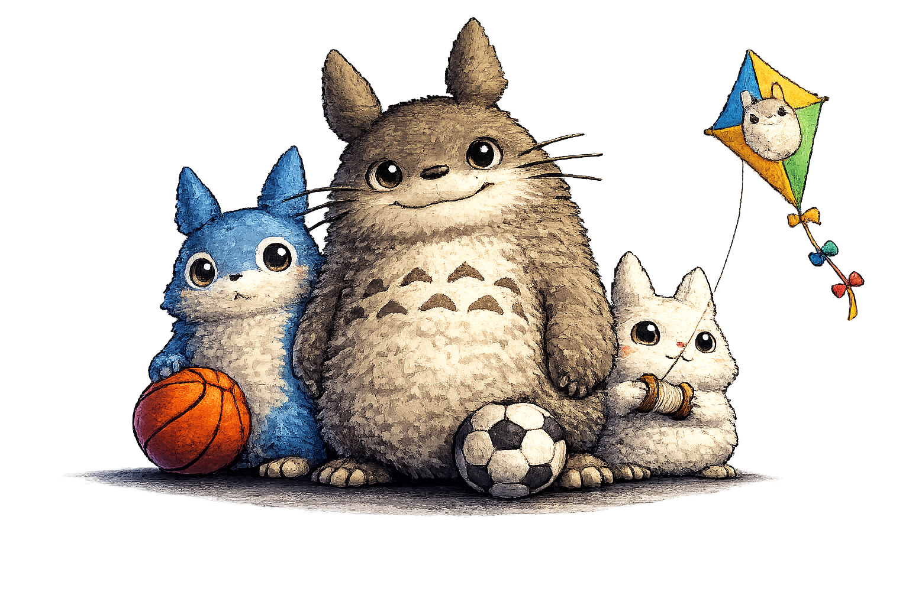

Windows 10/11
PipoGotchi
Um companheiro de desktop inspirado em Totoro com Inteligência Artificial comportamental. Ele explora sua tela, reage ao mouse e janelas, e desenvolve vontade própria. Inclui animações fluidas, sistema de carinho com duplo clique, 6 tipos de comida e minigames interativos como futebol, basquete e pipa.
Sem instalação necessária. Apenas descompacte e execute.

IMAGEMAQUI